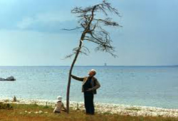
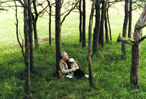
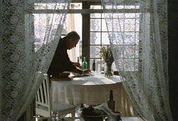
The Sacrifice (Swedish: Offret) is a 1986 drama film written and directed by Andrei Tarkovsky. Starring Erland Josephson, it centres on a middle-aged intellectual who attempts to bargain with God to stop an impending nuclear holocaust.
It originated as a screenplay entitled The Witch, which preserved the element of a sick middle-aged protagonist spending the night with a reputed witch. However, in this story, his cancer was miraculously cured, and he ran away with the woman. In March 1982, Tarkovsky wrote in his journal that he considered this ending "weak", as the happy ending was unchallenged. He wanted his frequent collaborator Anatoly Solonitsyn to star in this picture, as was also his intention for Nostalgia, but when Solonitsyn died from cancer in 1982, the director rewrote the screenplay into what would become The Sacrifice and also filmed Nostalgia with Oleg Yankovsky as the lead.
The Sacrifice was Tarkovsky's third film as a Soviet expatriate, after Nostalgia and the documentary Voyage in Time, and was also his last, as he died shortly after its completion. Like 1972's Solaris, it won the Grand Prix at the Cannes Film Festival.
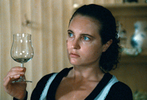
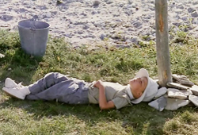
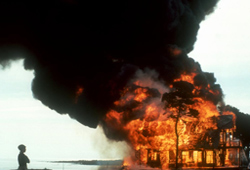
At the 1984 Cannes Film Festival, Tarkovsky was invited to film in Sweden. He decided to film The Sacrifice with Erland Josephson, who was best known for his work with Ingmar Bergman, and whom Tarkovsky had directed in Nostalgia. Cinematographer Sven Nykvist, a friend of Josephson and frequent collaborator with Ingmar Bergman, was asked to join the production. Despite a contemporaneous offer to shoot Sydney Pollack's Out of Africa, Nykvist later said that it was "not a difficult choice" and, like Josephson, he became a co-producer when he invested his fees back into the film.
Production designer Anna Asp, who worked on Bergman's Autumn Sonata and After the Rehearsal, and had won an Academy Award alongside Susanne Lingheim for Fanny and Alexander, also joined the project, as well as Daniel Bergman, one of Ingmar's children, who worked as a camera assistant. Many critics would comment on The Sacrifice in the context of Bergman's work.
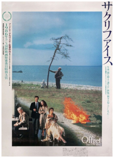
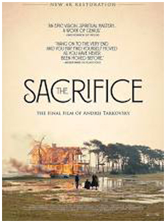
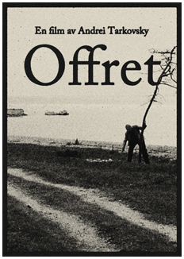
Alexander's house, specially built for the production, was to be burned for the climactic scene, in which Alexander sets fire to his house and his possessions. The shot was very difficult to achieve, and the first failed attempt was, according to Tarkovsky, the only problem during shooting. Despite Sven Nykvist's protest, only one camera was used for this scene, and while shooting the burning house, the camera jammed and the footage was thus ruined.
The scene had to be reshot, requiring a quick and very costly reconstruction of the house in two weeks. This time, two cameras were set up on tracks, running parallel to each other. The footage in the final version of the film is the second take, which lasts for six minutes (and ends abruptly because the camera had run through an entire reel). The cast and crew broke down in tears after the take was completed.
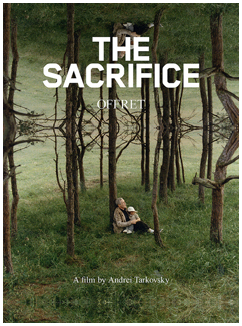
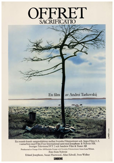
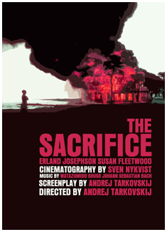
While often erroneously claimed to have been shot on Fårö, The Sacrifice was actually filmed at Närsholmen on the nearby island of Gotland as the Swedish military denied Tarkovsky access to Fårö.
Tarkovsky and Nykvist performed significant amounts of colour reduction on select scenes. According to Nykvist, almost sixty percent of the colour was removed from these parts.
In 1995, the Vatican compiled a list of 45 'great films', separated into the categories of "Religion", "Values", and "Art", to recognize the centennial of cinema. The Sacrifice was included under the first category, as well as Andrei Rublev.
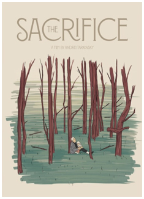
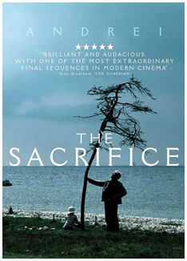
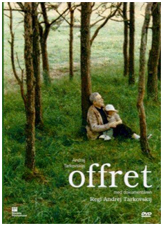